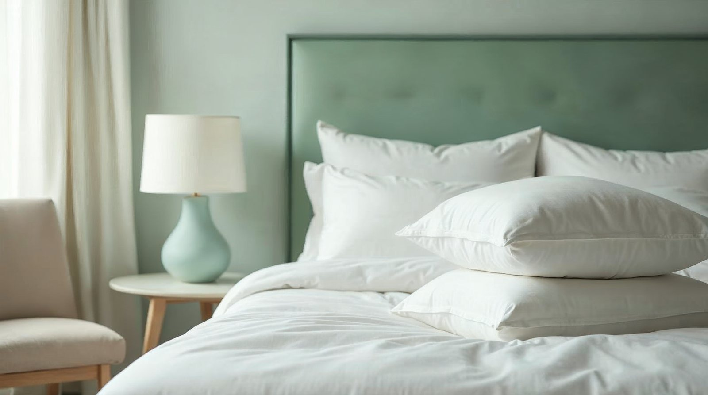
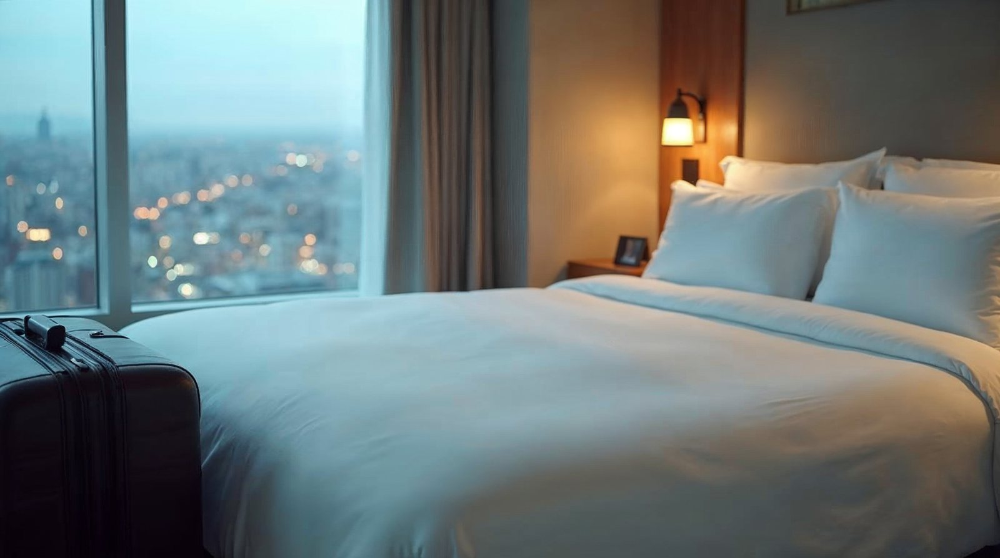
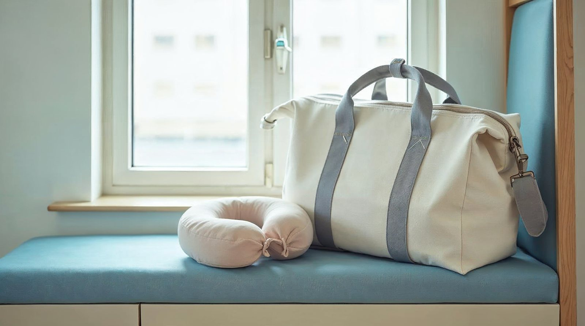
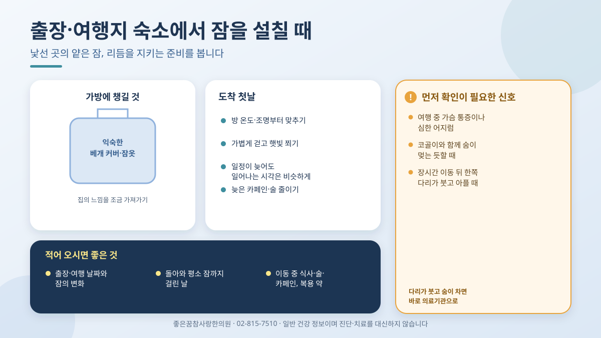

이종호 한의사 감수좋은꿈참사랑한의원 대표원장 (한의사 면허번호 19769)발행 2026-11-23 · 수정 2026-11-26
이 글의 차례
- 왜 이런 불편이 생길 수 있나요
- 낯선 곳 때문인지, 다른 원인이 겹친 것인지 어떻게 구분하나요
- 숙소에 도착하면 이렇게 해 보세요
- 먼저 이렇게 여쭙니다
- 일상에서 먼저 해 볼 수 있는 것
- 시차가 있는 곳에서는 무엇을 먼저 맞출까요
- 출장 중 저녁 일정은 어떻게 조절할까요
- 상황별 예시
- 스스로 점검해 보세요
- 이동하는 동안 몸은 어떻게 돌볼까요
- 출장이 잦은 분은 평소에 무엇을 해 둘까요
- 돌아온 뒤 리듬을 되찾는 순서
- 가족 여행에서 아이가 잠을 설칠 때는 어떻게 할까요
- 잠 기록은 이렇게 적어 보세요
- 한의원에서 함께 살필 수 있는 경우
- 상담 전에 알아 두시면 좋은 것
- 얼마나 지켜보고 언제 상담할까요
- 이렇게 기록해 오시면 상담이 쉬워집니다
- 이런 증상은 먼저 확인이 필요합니다
- 관련 글
집에서는 잘 자던 분도 출장지나 여행지 숙소에서는 새벽에 자꾸 깬다고 말합니다. 특히 도착한 첫날 밤이 유독 길게 느껴지고, 다음 날 일정까지 피곤이 이어집니다. 낯선 곳에서 잠이 얕아지는 것은 흔한 반응이라, 리듬을 지키는 몇 가지 준비로 부담을 줄일 수 있습니다.
대개 둘째 날 밤부터 한결 편해지고 집에 돌아오면 며칠 안에 평소 잠으로 돌아오는 경우가 많아, 돌아온 뒤 일주일 넘게 흐트러질 때 원인을 함께 살펴봅니다.
왜 이런 불편이 생길 수 있나요
- 낯선 장소에서는 몸이 주변을 살피느라 깊은 잠에 들어가기까지 시간이 더 걸리는 경우가 많다고 알려져 있습니다.
- 객실의 냉난방 소리, 복도 소음, 낯선 침구가 얕은 잠을 깨웁니다.
- 이동과 일정으로 식사와 잠 시각이 평소와 달라집니다.
- 저녁 모임의 술과 늦은 카페인이 잠을 더 얕게 만들 수 있습니다.
- 객실 공기가 건조하거나 난방이 세면 목이 마르거나 더워서 깨기도 합니다.
- 시차가 있는 곳에서는 몸의 시계가 현지 시간을 따라가는 데 며칠이 걸려, 한밤중에 눈이 떠지거나 오후에 졸음이 몰려옵니다.
낯선 곳 때문인지, 다른 원인이 겹친 것인지 어떻게 구분하나요
- 첫날 밤이 가장 힘들고 둘째, 셋째 날로 갈수록 편해진다면 낯선 장소에 적응하는 과정일 가능성이 큽니다.
- 머무는 내내 비슷하게 잠이 얕다면 방의 온도나 소음, 침구처럼 숙소 환경 자체가 맞지 않는 것인지 살펴봅니다.
- 시차가 있는 곳에서 한밤중에 눈이 떠지고 오후에 졸리다면 낯섦보다 몸의 시계가 어긋난 것이 중심일 수 있습니다.
- 출장 중 중요한 발표나 협상이 있었다면 장소보다 일에 대한 긴장이 잠을 흔들었을 수 있습니다.
- 집에서도 이미 잠이 얕았다면 숙소는 그것을 더 드러낸 것일 뿐이라, 평소의 잠부터 함께 봅니다.
숙소에 도착하면 이렇게 해 보세요
도착 직후 10분만 들여 방을 내 잠자리로 맞춰 두면 그날 밤이 한결 수월합니다. 짐을 풀기 전에 아래를 차례로 점검해 보세요.
- 1. 냉난방 온도를 확인하고 조금 서늘한 쪽으로 맞춥니다. 바람이 얼굴로 바로 오지 않게 방향도 돌려 둡니다.
- 2. 커튼을 끝까지 쳐 보고 틈으로 빛이 새는지 봅니다. 새는 곳은 옷걸이나 집게로 여며 둡니다.
- 3. 텔레비전과 냉장고, 전화기에 켜진 작은 불빛을 수건이나 메모지로 가립니다.
- 4. 침대에 누워 베개 높이를 확인하고, 높거나 낮으면 수건을 접어 맞추거나 여분의 베개를 요청합니다.
- 5. 밤에 화장실 가는 길을 한 번 걸어 보고, 필요하면 욕실 불을 살짝 켜 둡니다.
먼저 이렇게 여쭙니다
- 낯선 곳에서 첫날 밤이 유독 힘든가요?
- 방의 온도와 소음, 불빛은 어떻게 달랐나요?
- 일정이 빡빡해 늦게 자고 일찍 일어났나요?
- 시차가 있는 곳으로 다녀오셨나요?
- 집에 돌아온 뒤에도 며칠 잠이 흐트러졌나요?

일상에서 먼저 해 볼 수 있는 것
- 익숙한 베개 커버나 잠옷을 챙겨 가기
- 귀마개와 수면 안대를 챙기고, 예약할 때 엘리베이터와 떨어진 조용한 방을 부탁해 보기
- 도착하면 방의 온도와 조명을 편안하게 맞추고, 커튼 틈이나 기기의 작은 불빛은 수건으로 가리기
- 객실이 건조하면 젖은 수건을 걸어 두고 머리맡에 물 한 잔 두기
- 도착 첫날은 가볍게 걷고 햇빛을 쬐어 몸의 시계를 맞추기
- 일정이 늦어도 일어나는 시각은 크게 흐트러지지 않게 하기
- 늦은 시각의 카페인과 술은 줄이기
- 시차가 있는 곳이라면 출발 며칠 전부터 잠드는 시각을 현지 쪽으로 30분~1시간씩 옮겨 보기
- 집에 돌아온 날에는 낮잠을 짧게 하고 평소 기상 시각부터 지키기
시차가 있는 곳에서는 무엇을 먼저 맞출까요
몸의 시계를 움직이는 가장 큰 신호는 빛이고, 그다음이 식사 시각입니다. 도착하면 현지 아침에 바깥 빛을 충분히 받고, 저녁에는 조명을 낮춰 몸에 밤이라는 신호를 주세요.
비행기 안에서부터 도착지 시각에 맞춰 자고 깨는 것을 시작하면 도움이 됩니다. 도착지가 밤이라면 기내에서 안대와 귀마개로 쉬고, 낮이라면 창 가리개를 올리고 깨어 있어 봅니다.
식사도 현지 시각에 맞춥니다. 배가 고프지 않아도 현지 아침 시각에 가볍게 먹으면 몸이 새 하루의 시작을 알아차리기 쉽습니다. 도착 첫날 오후에 너무 졸리면 20~30분 안쪽으로만 눈을 붙이고, 해가 질 때까지는 깨어 있어 보세요.
출장 중 저녁 일정은 어떻게 조절할까요
출장지에서는 저녁 식사와 술자리가 길어지기 쉽습니다. 늦게까지 이어진 술자리는 잠드는 데는 도움이 되는 것처럼 느껴져도, 밤 후반에 자주 깨고 다음 날 아침을 무겁게 만들기 쉽습니다.
술을 마셔야 하는 자리라면 물을 함께 자주 마시고, 숙소로 돌아갈 시각을 미리 정해 두세요. 늦은 시각의 커피 대신 따뜻한 차를 고르는 것도 작은 도움이 됩니다.
숙소로 돌아와서는 바로 업무 메일을 열기보다 따뜻한 물로 씻고 다음 날 일정을 메모지에 정리한 뒤 눕습니다. 머릿속 일을 종이에 옮겨 두면 낯선 방에서도 생각이 덜 이어집니다.

상황별 예시
- 예를 들어 시차가 일곱 시간쯤 나는 곳으로 해외 출장을 다녀오는 직장인이라면, 도착한 날은 낮잠을 20~30분 안쪽으로 줄이고 현지 아침에 바깥 빛을 받으며 걷습니다. 식사도 현지 시각에 맞추고, 돌아온 뒤 첫 2~3일은 일어나는 시각부터 평소대로 지켜 리듬을 되찾습니다.
- 예를 들어 시험장 근처 숙소에서 전날 밤을 보내야 하는 수험생이라면, 집에서 쓰던 베개 커버나 잠옷을 챙기고 평소와 같은 시각에 눕습니다. 하룻밤 잠이 얕더라도 다음 날 버틸 수 있는 경우가 많으니, 꼭 푹 자야 한다는 조바심부터 내려놓는 편이 마음을 덜 긴장시킵니다.
- 예를 들어 명절이나 가족 여행으로 낯선 숙소에서 며칠 지내시는 어르신이라면, 첫날 저녁에 화장실까지 가는 길을 미리 확인하고 작은 불을 켜 두어 밤에 넘어지지 않게 하는 것이 먼저입니다. 평소 드시는 약은 날짜별로 나눠 챙기고, 잠이 안 온다고 다른 사람의 수면제를 드시지 않도록 합니다.
스스로 점검해 보세요
- 낯선 곳에서는 첫날뿐 아니라 사흘 넘게 잠이 얕다.
- 숙소에서 잠들기까지 30분 넘게 걸리고 새벽에 두 번 이상 깬다.
- 출장이나 여행 중에는 술이나 커피가 평소보다 늘어난다.
- 돌아온 뒤에도 일주일 넘게 잠드는 시각이 들쭉날쭉하다.
- 출장이 한 달에 두세 번 이상이라 몸이 쉴 틈이 없다고 느낀다.
- 이동 중이나 숙소에서 변비나 속 더부룩함이 자주 생긴다.
- 낯선 곳에서 잘 생각만 해도 며칠 전부터 걱정이 된다.
이동하는 동안 몸은 어떻게 돌볼까요
비행기나 기차, 차에서 오래 앉아 있으면 목과 허리가 굳고 몸이 차가워져, 숙소에 도착해서도 편한 자세를 찾기 어렵습니다. 한두 시간마다 자리에서 일어나 통로를 걷거나, 앉은 채로 발목을 위아래로 움직여 주세요.
기내나 차 안은 건조한 경우가 많으니 물을 조금씩 자주 마시고, 커피와 술은 줄이는 편이 좋습니다. 얇은 겉옷이나 목도리를 챙겨 몸이 식지 않게 하면 도착한 뒤 몸을 풀기도 한결 수월합니다.
도착하면 짐을 내려놓고 따뜻한 물로 씻은 뒤 목과 어깨를 천천히 돌려 주세요. 굳은 몸을 먼저 풀어 두면 낯선 침대에서도 잠자리에 드는 것이 조금 편해집니다.
출장이 잦은 분은 평소에 무엇을 해 둘까요
출장이 한 달에 몇 번씩 이어지면 매번 새로 적응하는 것이 큰 부담입니다. 평소 집에서의 잠 리듬이 단단할수록 낯선 곳에서도 덜 흔들리는 경우가 많아, 집에 있는 날의 기상 시각을 일정하게 지키는 것이 출장 준비의 시작입니다.
잠자리에 드는 순서를 정해 두는 것도 도움이 됩니다. 씻고, 같은 잠옷을 입고, 몇 분 숨을 고른 뒤 불을 끄는 순서를 집에서 익혀 두면 숙소에서도 그 순서가 익숙한 신호가 되어 줍니다.
출장용 잠자리 꾸러미를 따로 꾸려 두는 분도 있습니다. 안대, 귀마개, 얇은 잠옷, 작은 수건을 한 주머니에 넣어 두면 짐을 쌀 때마다 고민하지 않아도 됩니다.
돌아온 뒤 리듬을 되찾는 순서
집에 돌아온 날은 피곤해서 낮잠을 길게 자고 싶지만, 오후 늦게 오래 자면 그날 밤 잠이 밀리기 쉽습니다. 돌아온 날은 낮잠을 짧게 하고, 다음 날부터는 평소 기상 시각을 먼저 지켜 보세요.
돌아온 뒤 2~3일은 아침에 바깥 빛을 받으며 걷고, 식사도 평소 시각에 맞춥니다. 밀린 일을 처리하느라 밤늦게까지 일하는 날이 이어지면 리듬을 되찾는 데 시간이 더 걸리니, 첫 며칠은 일찍 마치는 날을 일부러 만들어 두는 것이 좋습니다.
가족 여행에서 아이가 잠을 설칠 때는 어떻게 할까요
아이도 낯선 숙소에서는 쉽게 잠들지 못하거나 밤중에 깨서 울기도 합니다. 집에서 쓰던 인형이나 작은 이불을 챙겨 가고, 집에서 하던 잠자리 순서를 숙소에서도 그대로 이어 가 주세요.
여행 일정이 빡빡하면 아이는 지쳐도 흥분이 가라앉지 않아 잠들기 어렵습니다. 저녁에는 조용한 시간을 조금 두고, 낮잠 시간도 평소와 크게 다르지 않게 맞춰 주시면 밤이 한결 수월합니다. 첫날 밤 아이가 깨면 보호자가 곁에 누워 등을 천천히 쓸어 주세요.
잠 기록은 이렇게 적어 보세요
출장이나 여행 전후로 아침에 한 줄씩 적어 보세요. 예를 들어 '출장 둘째 날, 현지 23시 누움, 3시에 깸, 다시 잠들기까지 1시간, 아침 개운함 10점 중 3점'처럼 적습니다.
돌아온 뒤에도 같은 방식으로 며칠 이어 적으면 평소 잠으로 돌아오기까지 며칠이 걸리는지 보입니다. 다음 출장 때 어떤 준비가 도움이 되었는지 비교하는 데도 쓸 수 있습니다.
한의원에서 함께 살필 수 있는 경우
- 숙소가 바뀔 때마다 잠이 나빠지는 경우 긴장의 정도와 수면 시각을 함께 살핍니다.
- 출장이 잦아 생활 리듬이 매번 달라지는 경우 식사와 활동 시간을 함께 살핍니다.
- 돌아온 뒤에도 일주일 넘게 흐트러지는 경우 몸의 피로와 리듬을 함께 살핍니다.
좋은꿈참사랑한의원에서는 첫 방문 때 맥부터 짚습니다. 맥을 짚으면서 장소가 바뀔 때의 잠과 일정, 이동 시간, 돌아온 뒤 잠이 제자리를 찾기까지 걸린 날을 여쭙고, 필요하다고 판단될 때 혀와 배를 살펴 피로와 소화 상태를 확인합니다. 이동 중 배변 리듬이 흔들리는지, 손발이 차거나 얼굴로 열이 오르는지도 함께 여쭙습니다.
오래 앉아 이동해 목과 허리가 굳었다면 움직임도 함께 봅니다. 그 뒤 침이나 한약 상담 등을 정하고, 출장이 잦은 분은 일정에 맞춰 무엇을 챙기고 어떻게 쉴지 함께 정리합니다. 한약을 드시는 중이라면 여행 중 보관 방법도 함께 안내해 드립니다.
다음에 오시면 지난번 이야기를 이어서 여쭙고 다음 일정 전후의 잠 기록을 함께 봅니다.
상담 전에 알아 두시면 좋은 것
한약 상담을 하게 되면 지금 드시는 약과 영양제를 먼저 여쭙고 확인한 뒤에 정합니다. 처방받은 약은 임의로 끊거나 줄이지 마시고, 임신 중이거나 임신 가능성이 있다면 먼저 말씀해 주세요. 이 경우 산부인과와도 함께 상의하시길 권합니다.
출장이나 여행 일정이 잡혀 있다면 날짜를 미리 알려 주세요. 일정에 맞춰 무엇을 챙기고 어떻게 지낼지 함께 정리해 드립니다. 다녀오신 뒤에는 이번 일정의 잠 기록을 놓고 무엇이 도움이 되었는지 함께 짚어 봅니다.
얼마나 지켜보고 언제 상담할까요
- 낯선 곳 첫날 밤에 잠이 얕은 것은 흔한 반응이라, 하루 이틀은 기상 시각만 지키며 지켜봅니다.
- 시차가 있는 곳에서는 몸이 하루에 한 시간 정도씩 따라간다고 알려져 있어, 시차가 클수록 돌아온 뒤 리듬을 되찾는 데 며칠 더 걸릴 수 있습니다.
- 돌아온 뒤 일주일이 지나도 잠드는 시각이 들쭉날쭉하거나, 출장 때마다 잠이 크게 흔들리는 일이 몇 달째 반복된다면 상담을 받아 보세요.

이렇게 기록해 오시면 상담이 쉬워집니다
- 출장·여행 날짜와 그때의 잠 변화
- 다녀온 곳과의 시차, 이동에 걸린 시간
- 돌아온 뒤 잠이 평소대로 돌아오기까지 걸린 날
- 이동 중 식사·술·카페인
- 복용 중인 수면제나 다른 약
이런 증상은 먼저 확인이 필요합니다
- 장시간 이동 뒤 한쪽 다리가 붓고 아프거나, 가슴 통증·숨참·심한 어지럼이 있는 경우
- 코골이와 함께 숨이 멎는 듯한 모습이 있는 경우
이런 신호가 있으면 한의원보다 가까운 병원이나 응급실을 먼저 찾으세요.
관련 글
- 해외 출장 전후에 한의원 방문은 어떻게 계획하면 되나요?
- 한약 파우치는 어떻게 보관하고, 여행 갈 때는 어떻게 챙기나요?
- 이사한 직후 낯선 집에서 잠이 오지 않을 때는 어떻게 하나요?

여쭙는 것
- 낯선 곳에서 첫날 밤이 유독 힘든가요?
- 방의 온도와 소음, 불빛은 어떻게 달랐나요?
- 일정이 빡빡해 늦게 자고 일찍 일어났나요?
생활에서 해 볼 것
- 익숙한 베개 커버나 잠옷을 챙겨 가기
- 귀마개와 수면 안대를 챙기고, 예약할 때 엘리베이터와 떨어진 조용한 방을 부탁해 보기
- 도착하면 방의 온도와 조명을 편안하게 맞추고, 커튼 틈이나 기기의 작은 불빛은 수건…
한의원에서 함께 살필 것
- 숙소가 바뀔 때마다 잠이 나빠지는 경우 긴장의 정도와 수면 시각을 함께 살핍니다.
- 출장이 잦아 생활 리듬이 매번 달라지는 경우 식사와 활동 시간을 함께 살핍니다.
- 돌아온 뒤에도 일주일 넘게 흐트러지는 경우 몸의 피로와 리듬을 함께 살핍니다.
먼저 확인이 필요한 신호
- 장시간 이동 뒤 한쪽 다리가 붓고 아프거나, 가슴 통증·숨참·심한 어지럼이 있는 경우
- 코골이와 함께 숨이 멎는 듯한 모습이 있는 경우
한눈에 보는 표
| 구분 | 핵심 |
|---|---|
| 여쭙는 것 | 낯선 곳에서 첫날 밤이 유독 힘든가요? 방의 온도와 소음, 불빛은 어떻게 달랐나요? |
| 생활에서 해 볼 것 | 익숙한 베개 커버나 잠옷을 챙겨 가기 귀마개와 수면 안대를 챙기고, 예약할 때 엘리베이터와 떨어진 조용한 방을 부탁해 보기 |
| 한의원에서 함께 살필 것 | 숙소가 바뀔 때마다 잠이 나빠지는 경우 긴장의 정도와 수면 시각을 함께 살핍니다. 출장이 잦아 생활 리듬이 매번 달라지는 경우 식사와 활동 시간을 함께 살핍니다. |
| 먼저 확인이 필요한 신호 | 장시간 이동 뒤 한쪽 다리가 붓고 아프거나, 가슴 통증·숨참·심한 어지럼이 있는 경우 코골이와 함께 숨이 멎는 듯한 모습이 있는 경우 |
자주 묻는 질문
낯선 곳에서 잠을 못 자는 것도 불면인가요?
환경이 바뀐 데 따른 일시적인 반응인 경우가 많아 대개 며칠 안에 평소 잠으로 돌아옵니다. 반복되고 일상에 지장이 있다면 상담해 보시길 권합니다.
집에서 쓰던 향이나 소리를 가져가도 되나요?
불편하지 않다면 익숙한 신호로 도움이 될 수 있습니다.
해외 출장에서 시차가 있을 때는 어떻게 하나요?
도착지 시간에 맞춰 식사와 햇빛 쬐기를 하고 낮잠은 짧게 하는 방법이 흔히 쓰입니다. 복용 중인 약의 시간 조정은 처방한 의사와 상의하세요.
출장지에서 운동을 해도 되나요?
가벼운 걷기나 스트레칭은 낯선 곳에서 긴장을 푸는 데 도움이 될 수 있습니다. 다만 밤늦은 격한 운동은 잠을 더 늦출 수 있어 저녁 이른 시간에 하세요.
좋은꿈참사랑한의원은 재진 때 지난번 이야기부터 이어서 여쭙니다. 진료시간과 예약은 오시는 길에서 확인하세요.
어디서 상담받을 수 있나요?
좋은꿈참사랑한의원은 서울 동작구 만양로2길 2 신성빌딩 3층·5층(서울 동작구 상도동, 7호선 상도역 3번 출구 근처)에 있습니다. 한의사 3명(이종호 대표원장, 조영기 수석진료원장, 정원영 진료원장)이 진료합니다. 진료시간은 평일 09:30~20:00(점심 13:00~14:00), 토·일·공휴일 09:30~15:00이며, 방문 전 전화로 확인을 권합니다. 예약은 네이버 예약, 카카오톡 상담, 전화 02-815-7510로 받습니다.
이 글은 일반적인 건강 정보이며 개인의 진단이나 치료를 대신하지 않습니다. 증상이 있거나 복용 중인 약이 있다면 진료를 통해 확인하세요. 치료 효과는 개인마다 다를 수 있습니다.
작성 기준: 일반적으로 알려져 있는 건강 정보를 참고해 정리했습니다(대표원장 감수). 증상 기록은 1~2주 동안 하루 1회, 비슷한 시간에 적어 오시면 지난 상태와 비교하기 쉽습니다.